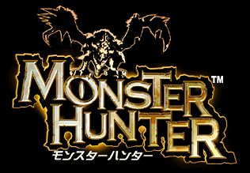

Capcom: A Legacy of Gaming Excellence
Capcom Co., Ltd., a leading developer and publisher in the video game industry, has left an indelible mark on gaming since its founding in May 1979. Based in Osaka, Japan, the company has earned its reputation for delivering groundbreaking franchises, innovative gameplay, and memorable characters. From arcade classics to modern console masterpieces, Capcom's history is a testament to its creativity, technical expertise, and commitment to its fans.
Origins and Early Success
Originally established as IRM Corporation and later rebranded as Capcom in 1983, the company's name is derived from "Capsule Computers," emphasizing its vision of encapsulating innovative entertainment. In the early 1980s, Capcom initially focused on arcade game development, rapidly becoming a dominant force in the sector.
The arcade hit 1942 (1984), a vertically scrolling shooter, showcased Capcom's ability to create engaging, high-quality games that stood out in a crowded market. This success paved the way for the development of franchises that would define the company for decades.
Iconic Franchises
Capcom's portfolio is filled with some of the most beloved and enduring franchises in gaming history:
Street Fighter:
Released in 1987, Street Fighter revolutionized the fighting game genre. The sequel, Street Fighter II (1991), set new standards for competitive gameplay with its diverse cast of characters, iconic moves, and intricate mechanics. The series continues to thrive in eSports and casual play.
Mega Man:
Debuting in 1987, the Mega Man series became synonymous with challenging platforming and imaginative robot-themed worlds. Its enduring appeal lies in its tight controls and the unique ability to adapt strategies by acquiring powers from defeated bosses.
Resident Evil:
Launched in 1996, Resident Evil is often credited with defining the survival horror genre. The franchise's gripping narratives, atmospheric tension, and memorable characters like Leon S. Kennedy and Jill Valentine have captivated fans for decades. The series has successfully reinvented itself with modern remakes and entries such as Resident Evil 7 and Resident Evil Village.
Devil May Cry:
Introduced in 2001, Devil May Cry redefined the hack-and-slash genre with its focus on fast-paced, stylish combat and over-the-top action. Players were immediately drawn to the charismatic and cocky protagonist, Dante, whose sharp wit and arsenal of weapons, including swords and firearms, made him an instant icon. The series introduced a revolutionary combo-based combat system that rewarded creativity and skill, pushing players to achieve increasingly complex and flashy moves.
Monster Hunter:

Since its debut in 2004, Monster Hunter has become a global phenomenon. Players hunt massive creatures in expansive ecosystems, emphasizing strategy and cooperation. Titles like Monster Hunter: World (2018) have broadened the franchise's appeal, cementing it as one of Capcom’s most successful series.
Innovation and Adaptation
Capcom's ability to innovate and adapt has been key to its longevity. From pioneering 2D sprite work to embracing 3D graphics and photorealistic visuals, the company continually pushes technological boundaries. Its RE Engine, introduced with Resident Evil 7 (2017), is lauded for delivering stunning graphics and immersive gameplay, and it powers many of Capcom's recent successes.
The company has also embraced remakes, bringing classics like Resident Evil 2 and Resident Evil 4 to a new generation with updated visuals, refined mechanics, and fresh perspectives.
Cultural Impact
Beyond games, Capcom’s influence extends into films, animated series, merchandise, and more. The Resident Evil movie series has grossed over a billion dollars, while animated adaptations of Street Fighter and Mega Man have kept fans engaged across media.
Capcom’s iconic characters—such as Ryu, Chun-Li, Mega Man, and Leon S. Kennedy—are cultural icons, appearing in crossovers like Super Smash Bros. and Marvel vs. Capcom. These characters resonate across generations, embodying the spirit of their respective games.
Future and Legacy
Capcom's dedication to quality and innovation continues to shine. Recent successes like Street Fighter 6 and Resident Evil 4 Remake prove that the company remains at the forefront of the gaming industry. With new projects on the horizon and a steadfast fan base, Capcom's legacy is secure.
In an ever-evolving industry, Capcom’s blend of nostalgia, creativity, and technical excellence ensures its place as one of the most influential and celebrated names in gaming. From arcade glory to global multimedia dominance, Capcom is a testament to the power of visionary storytelling and relentless innovation.
Want to know more about,
Dante Sparda
Resident Evil